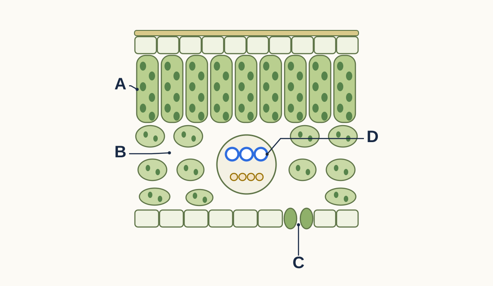

Q8 · Original exam-style practice · 8 marks
Write in your book. Attempt first; open a review only when your teacher asks.
10 minutes · on your own

Use the lettered leaf diagram.
(a) Name structures A and C. [2]
(b) Explain how carbon dioxide from the air reaches the cells in layer A. [3]
(c) Explain two ways cells in layer A are adapted for photosynthesis. [2]
(d) Leaves are thin. Explain why this helps photosynthesis. [1]
Model answer & criteria · after collection / teacher instruction
(a) [2] A: palisade mesophyll (cells) [1]. C: stoma [1].
(b) [3] Carbon dioxide diffuses in through the stomata / C [1]; through the air spaces / B (in the spongy layer) [1]; into the palisade cells, down a concentration gradient, as they use it [1].
(c) [2] Many chloroplasts to absorb light [1]; near the upper surface / tall and tightly packed so they receive most light [1].
(d) [1] Short diffusion distance for carbon dioxide (or light reaches all cells) [1].
Name · 2 marks A palisade; C stoma.
Link · 6 marks CO₂ route: stoma → air spaces → cells by diffusion [3]. · Palisade adaptations linked to light [2]. · Thin → short diffusion distance [1].